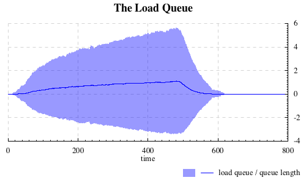

Aivika
Aivika is a simulation framework consisting of programming libraries that allow you to use the general purpose Haskell programming language as a high-level modeling language primarily for discrete event simulation and partially for system dynamics and agent-based modeling. It is optimized for sequential execution, nested simulation and parallel distributed simulation. The complexity is hidden under easy-to-use computations.
Easy to Create Flight Simulators
You can create a flight simulator, where you can define the model and its simulation in Haskell and then create a desktop or Web application in C++, C# or Java so that the application would request for the parameters, run the simulation and then show the results to your client.

Monte Carlo Simulation Experiments
You can run Monte Carlo simulation experiments by the specified external parameters to provide the sensitivity analysis. Aivika can plot charts and histograms, generate CSV files, collect the statistics summary, represent the visual results in HTML files. Thousands of simulation runs can be launched in parallel as possible.
You can see it in the following charting demonstration example.
One Approach for Sequential, Nested and Distributed Simulation
The most exciting thing is that Aivika supports not only sequential simulation, but there are also versions for nested simulation and parallel distributed simulation based on the optimistic Time Warp method, which allows building very complex models. Everywhere the same unified approach is used.
Multi-Method and General-Purpose
All versions of Aivika are general-purpose discrete event simulation libraries including the distributed version. All them support the time-oriented, event-oriented and process-oriented paradigms. They also support such advanced techniques as resource preemption. You can both dive into low-level details of the model activities and can define quite complex queue networks in a simple declarative way.
Optimized Sequential Simulation
The basic version of Aivika is optimized for sequential execution and can be sufficient for the most of use cases. It is quite fast and easy-to-use.
Optimistic Distributed Simulation
The distributed version of Aivika is slower up to 12-30 times than the basic sequential version on the equivalent sequential models, where the lower estimation in 12 times is likely to correspond to most models. It doesn’t imply that every distributed simulation will have such a speed as the message passing slows down the simulation and sometimes it may slow down essentially if there are many rollbacks. But this rough estimation shows that your distributed model can be more fast than the sequential one, when utilizing properly the modern multi-core processors and multi-computer systems, especially if they are based on such processors as Intel Core X that can have 36 cores. Moreover, there are tasks that can be solved only by using multi-computer systems as these tasks need too much memory to represent the model.
Recovering Distributed Simulation
Aivika can recover the distributed simulation after temporary connection errors, which allows you to build the distributed model using ordinary cheap computers connected with help of the ordinary net. It is assumed that the connection errors are inevitable in complex environments and hence we have to deal with them.
You can verify it yourself by launching the following distributed simulation test.
GPSS-like DSL
There is also a module that supports a GPSS-like embedded DSL. It can be useful if you are going to translate your GPSS models into Aivika. The DSL is not fully equivalent, but it is quite similar to the original GPSS language. So, it supports the most of simulation blocks such as PREEMPT and even GATHER.
Please look at the following GPSS example that demonstrates the use of this GPSS-like DSL.